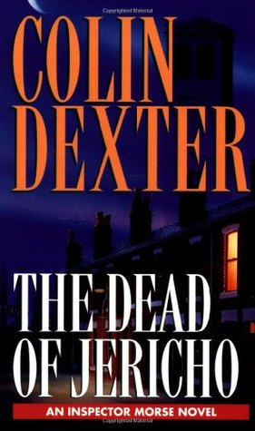
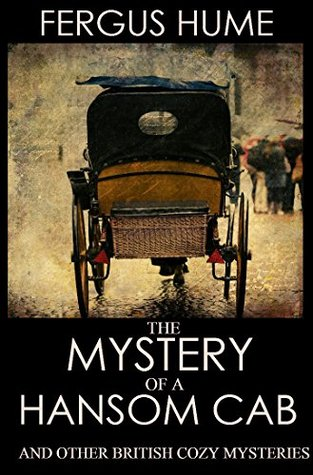

5: The Moonstone

Ratings : 🌟 3.9/5
Author : Wilkie Collins
Genre :MysteryDetective novelCrime FictionHorror
Year Published : 1868
Pages : 496
Brief:
Rachel Verinder, a young English woman, inherits a large Indian diamond on her eighteenth birthday. It is a legacy from her uncle, a corrupt British army officer who served in India. The diamond is of great religious significance and extremely valuable, and three Hindu priests have dedicated their lives to recovering it. The story incorporates elements of the legendary origins of the Hope Diamond (or perhaps the Orloff Diamond or the Koh-i-Noor diamond). Rachel's eighteenth birthday is celebrated with a large party at which the guests include her cousin Franklin Blake. She wears the Moonstone on her dress that evening for all to see, including some Indian jugglers who have called at the house. Later that night the diamond is stolen from Rachel's bedroom, and a period of turmoil, unhappiness, misunderstandings and ill luck ensues. Told by a series of narratives from some of the main characters, the complex plot traces the subsequent efforts to explain the theft, identify the thief, trace the stone and recover it.
4: The Daughter of Time

Ratings : 🌟 3.9/5
Author : Josephine Tey
Genre :MysteryCrime fiction
Year Published : 1951
Pages : 224
Brief:
Alan Grant, Scotland Yard Inspector (a character who also appears in five other novels by the same author) is feeling bored while confined to bed in hospital with a broken leg. Marta Hallard, an actress friend of his, suggests that he should amuse himself by researching a historical mystery. She brings him some pictures of historical characters, aware of Grant's interest in human faces. He becomes intrigued by a portrait of King Richard III. He prides himself on being able to read a person's character from his appearance, and King Richard seems to him a gentle, kind and wise man. Why is everyone so sure that he was a cruel murderer?
With the help of other friends and acquaintances, Grant investigates Richard's life and the case of the Princes in the Tower, testing out his theories on the doctors and nurses who attend to him. Grant spends weeks pondering historical information and documents with the help of Brent Carradine, a likable young American researcher working in the British Museum. Using his detective's logic, he comes to the conclusion that the claim of Richard being a murderer is a fabrication of Tudor propaganda, as is the popular image of the King as a monstrous hunchback.
3: The Dead of Jericho
Ratings : 🌟 3.9/5
Author : Colin Dexter
Genre :Mystery NovelCrime NovelDetective Novel
Year Published : 1981
Pages : 224
Brief:
Detective Chief Inspector E. Morse of the Thames Valley Police meets Anne Scott at a party hosted by Mrs Murdoch in North Oxford. Six months later Anne Scott is found hanging in her kitchen at 9 Canal Reach, Jericho, Oxford. Initially Chief Inspector Bell, from the closer Oxford Central station on St. Aldate's Street, is assigned to the case; but a fortnight later Morse takes over the investigation and subsequently both of Mrs Murdoch's sons, Edward "Ted" Murdoch and Michael Murdoch, as well as Anne Scott's former employers, brothers Charles Richards and Conrad Richards, and Charles's wife, Celia, come to the attention of Morse, as do Ms Scott's neighbours, including the nosy handyman George Jackson, and Sophocles's Oedipus Rex.
2: The Mystery of a Hansom Cab
Ratings : 🌟 3.9/5
Author : Fergus Hume
Genre :FictionMystery
Year Published : 1886
Pages : 164
Brief:
The Mystery of a Hansom Cab takes place in Melbourne, Australia, and involves an investigation into a homicide, after a corpse is discovered in the early hours, in a hansom cab. Melbourne plays a significant role in the plot and, as the author describes: "Over all the great city hung a cloud of smoke like a pall". The killer's identity is not as significant a revelation in the story as are the roles of the influential and secretive Frettlby family, and their secret: they have an illegitimate daughter living on the streets. The class divide between Melbourne's wealthy and less fortunate is addressed throughout the plot.
The protagonist in the novel is a policeman named Detective Gorby, who is given the task of solving the murder. As Hume describes the character's investigative skills: "He looked keenly round the room, and his estimate of the dead man's character was formed at once."
1: The Murder of Roger Ackroyd

Ratings : 🌟 4.2/5
Author : Agatha Christie
Genre :Adventure NovelSwordSorcery
Year Published : 1926
Pages : 312
Brief:
Of the 21 Conan the Barbarian tales that Robert E. Howard (1906-1936) completed in his all-too-brief lifetime, Hour of the Dragon was the only novel-length story. It may also be the very best of the series, crafted when the legendary pulp writer was working at the height of his powers. Conan is a huge swordsman fighting both natural and supernatural foes in a time-lost world known as the Hyborian Age. At this point in his bloody career, Conan is the middle-aged king of the ancient kingdom of Aquilonia. He must fight one final battle to save the known world from a resurrected sorcerer named Xaltotun. Only the fabled Heart of Ahriman can destroy Xaltotun, and Conan must embark on an epic quest to retrieve the Heart. Howard hammered out every word as if he had actually lived through it himself, and in doing so forged a crimson masterpiece of heroic fantasy.
It was one of the last Conan stories published before Howard's suicide, although not the last to be written.[1] The novel was first published in serial form in the December 1935 through April 1936 issues of the pulp magazine Weird Tales. The first book edition was published by Gnome Press in hardcover in 1950.